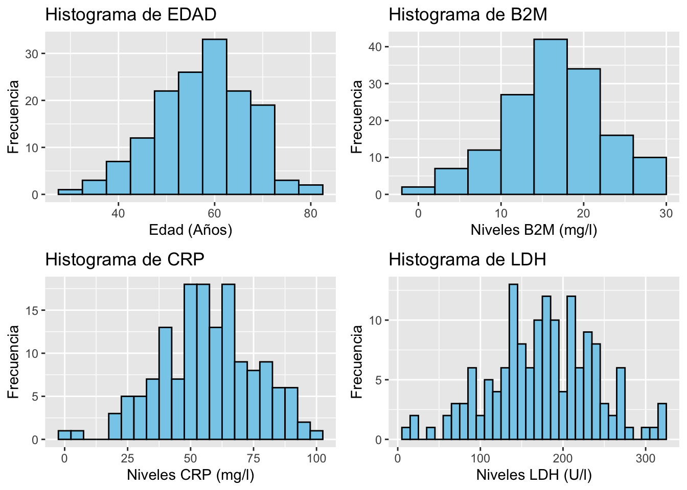
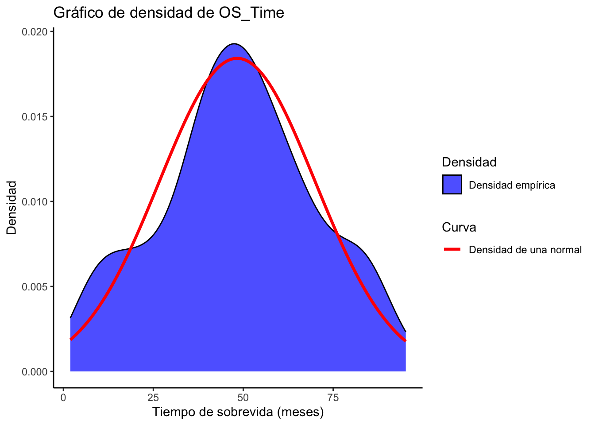
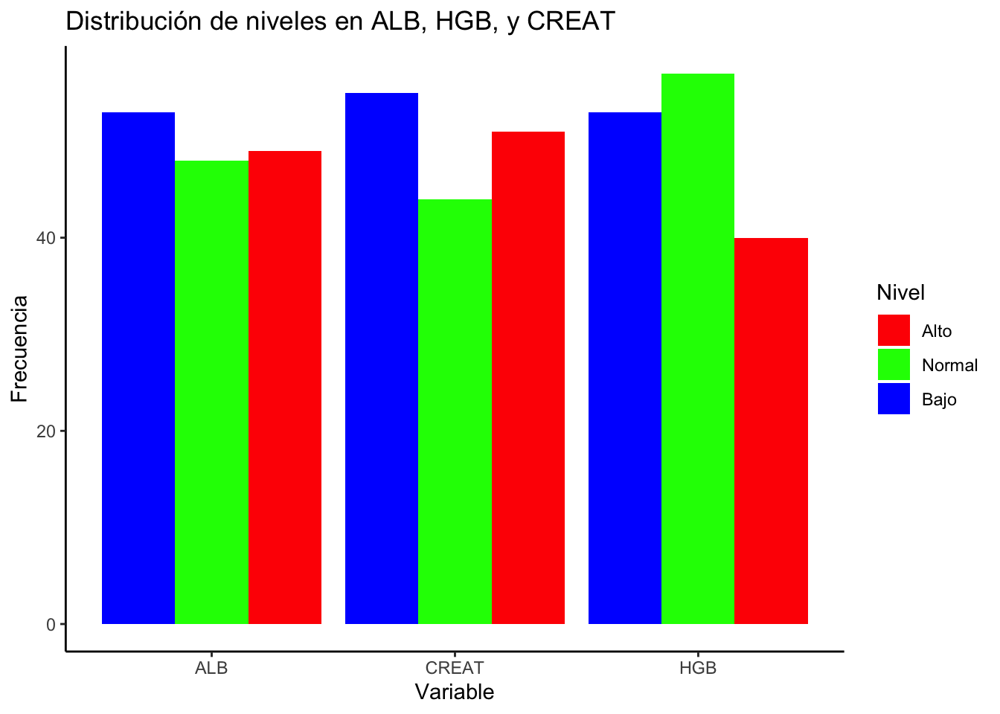
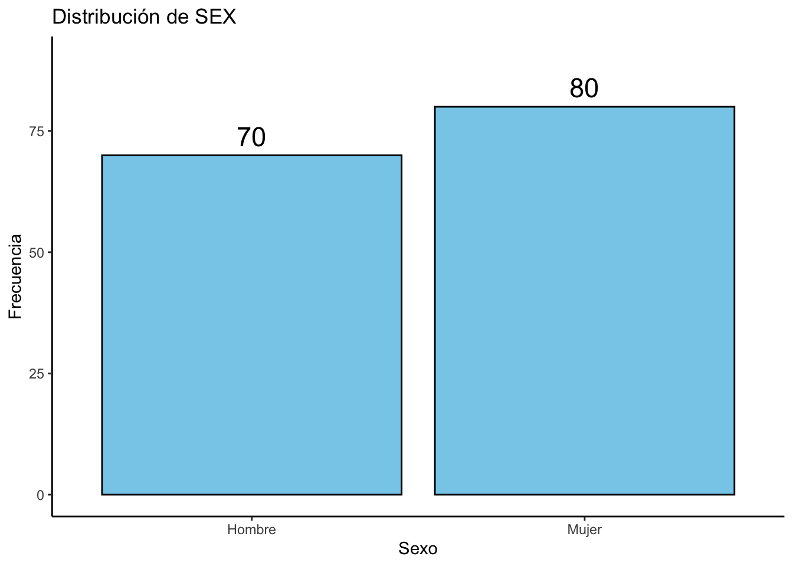
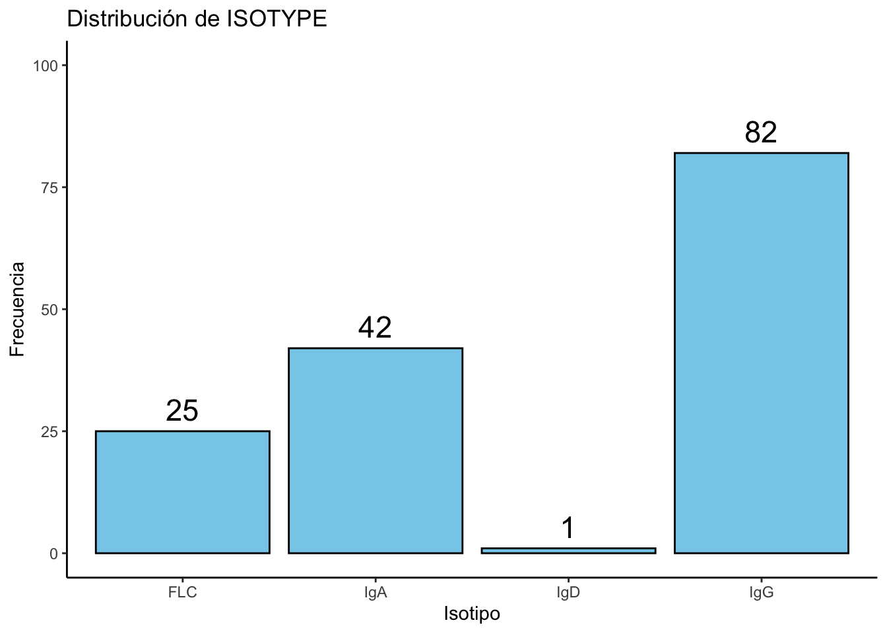
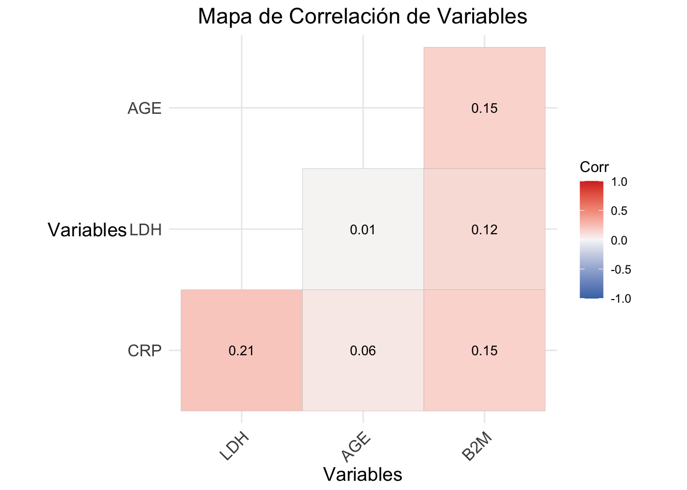

| Variables de estudio | |
|---|---|
| Variable | Explicación |
| original order | Orden de los datos |
| PATID | Identificación Paciente |
| PROT | Tratamiento Recibido ("TT2" o "TT3") |
| SEX | Sexo del paciente ("male" o "female") |
| RACE | Raza del paciente ("white" o "other") |
| ISOTYPE | Isotipo del paciente ("IgA" , "IgD", "IgG" o "FLC") |
| AGE | Edad del paciente (en meses) |
| B2M | Niveles de Microglobulina beta-2 (en mg/l) |
| CRP | Niveles de Proteína C-Reactiva (en mg/l) |
| CREAT | Niveles de Creatinina (en mg/dl) |
| LDH | Niveles de Lactato Deshidrogenasa (en U/l) |
| ALB | Niveles de Albúmina (en g/l) |
| HGB | Niveles de Hemoglobina (en g/dl) |
| ASPC | Células plasmáticas en aspirado de médula ósea |
| BMPC | Células plasmáticas en biopsia de médula ósea |
| MRI | Número de lesiones focales |
| Cyto_Abn | Indica si presenta mutaciones citogenéticas (0 = No , 1 = Sí) |
| CPS1 | Variable sin contexto |
| CPR1 | Variable sin contexto |
| EFS_Censor | Indica si el paciente ha recaido (0 = No | 1 = Sí) |
| EFS_Time | Tiempo sin recaer (en meses) |
| OS_Censor | Indica si el paciente falleció (0 = No | 1 = Sí) |
| OS_Time | Tiempo de supervivencia (en meses) |
Análisis de Factores Predictivos en la Supervivencia de Pacientes con Mieloma Múltiple
Taller evaluado de repaso para el Primer Parcial
RESUMEN
El Mieloma Múltiple (MM) es un cáncer hematológico que afecta a las células plasmáticas en la médula ósea, resultando en la producción descontrolada de una paraproteína que afecta la función inmunológica del cuerpo. A pesar de la falta de cura, los tratamientos actuales permiten periodos de remisión prolongados. Este informe analiza datos clínicos de 564 pacientes con MM, proporcionados por la Universidad de Arkansas, con el objetivo de explorar el impacto de diversas variables en el tiempo de supervivencia de los pacientes.
Se generaron datos simulados basados en las variables del conjunto de datos y se realizaron análisis descriptivos y pruebas estadísticas para determinar si las variables seleccionadas siguen distribuciones normales y cómo influyen en la supervivencia. El análisis concluyó que la mayoría de las variables cuantitativas siguen una distribución normal, y el modelo de regresión mostró que la variable LDH tiene una relación significativa y negativa con el tiempo de supervivencia. Sin embargo, otras variables como AGE, B2M y CRP no mostraron efectos significativos.
Además, se analizó la efectividad del tratamiento en el tiempo de supervivencia, utilizando el test de Hotelling para comparar las medias de las variables entre los tratamientos, sin encontrar diferencias significativas. Estos resultados sugieren que, aunque algunas variables pueden estar asociadas con la supervivencia, el modelo no logra explicar completamente la variabilidad del tiempo de supervivencia.
Planteamiento del problema y metodología a emplear
El Mieloma Múltiple (MM) es un tipo de cáncer que afecta a las células plasmáticas, un tipo de glóbulo blanco que se encuentra en la médula ósea y que son claves en el sistema inmunológico ya que producen anticuerpos.
En el MM, las células plasmáticas se vuelven anormales y comienzan a multiplicarse de forma descontrolada, produciendo únicamente un tipo de anticuerpo llamado paraproteína o proteína M, que no tiene una función útil en el organismo. Esta paraproteína aumenta progresivamente, desplazando a las otras inmunoglobulinas, cuya producción disminuye. Al reducirse las defensas naturales del cuerpo, el sistema inmunológico se ve debilitado, lo que aumenta la susceptibilidad a infecciones. Generalmente, los síntomas incluyen dolor óseo, debido al daño que produce en los huesos, fatiga, como resultado de la anemia. Otros síntomas son la pérdida de peso, insuficiencia renal y niveles altos de calcio en sangre, lo que puede provocar náuseas, sed excesiva y confusión. Por ahora, no tiene cura, pero sí un tratamiento que permite tener largos períodos de remisión, es decir, sin síntomas.
En este informe vamos a generar aleatoriamente diversas variables relacionadas con parámetros clínicos del MM y vamos a realizar algunos contrastes y modelos con el fin de analizar cual es su efecto en el tiempo de sobrevida.
Los datos con los que vamos a trabajar fueron aportados por la universidad de Arkansas y están formados por 564 observaciones de las cuales se tomaron 23 variables.
Aquí se puede observar las variables que contiene la base de datos de Arkansas junto a una pequeña descripción.
Generación de datos y analisis descriptivo
Simulación de datos
Siguiendo las instrucciones de esta entrega, se simularán los datos de las siguientes variables, aunque tomaremos la media y la varianza de la muestra tomada en la base de datos Arkansas para evitar resultados inverosimiles.
| Variables simuladas | ||
|---|---|---|
| Variable | Tipo Variable | Posibles valores |
| AGE | Cuantitativa | Valores positivos |
| B2M | Cuantitativa | Valores positivos |
| CRP | Cuantitativa | Valores positivos |
| LDH | Cuantitativa | Valores positivos |
| ALB | Ordinal | Bajo, Normal, Alto |
| HGB | Ordinal | Bajo, Normal, Alto |
| CREAT | Ordinal | Bajo, Normal, Alto |
| SEX | Nominal | Hombre, Mujer |
| PROT | Nominal | Tratamiento A, Tratamiento B |
Ahora, de la base de datos Arkansas, seleccionamos 150 observaciones y nos quedamos con las variables OS_time y ISOTYPE. Estas las unimos a las observaciones simuladas anteriormente para así tener un única base de datos.
Análisis descriptivo
Si realizamos un histograma de las variablas cuantitativas, obserservamos como todas las gráficas están centradas sobre la media y presentan una curva similar a la normal. Quizás, la gráfica de LDH puede presentar una distribución distinta. En la siguiente sección, Pruebas estadísticas, analizaremos si realmente las variables se ajustan a una distribución normal.

Para la variable OS_time, realizaremos una gráfica de su densidad y así observar su posible distribución.

Para las variables ordinales y nominales, realizaremos un diagrama de barras agrupadas y, además, una tabla donde aparecen las frecuencias. En este observamos como todas las variables tienen aproximadamente el mismo número de observaciones para cada nivel, a excepción, quizá del número de observaciones con niveles de HGB altos.

# A tibble: 3 × 4
Nivel ALB CREAT HGB
<ord> <int> <int> <int>
1 Bajo 53 55 53
2 Normal 48 44 57
3 Alto 49 51 40Por último, si analizamos las variables nominales SEX y ISOTYPE, observamos como hay aproximadamente el mismo número de observaciones para ambos sexos. Por el contrario, en la variable ISOTYPE, observamos como hay una gran disparidad entre los diferentes isotipos. En este caso, el isotipo IgD no estaría representado en esta muestra.


Para terminar, realizaremos un mapa de correlación

La mayoría de las correlaciones en esta matriz son débiles o muy débiles, con la excepción de la relación entre CRP y LDH, que es la más fuerte, aunque aún se considera moderada. Esto sugiere que, en general, las variables en esta matriz no están fuertemente relacionadas entre sí en el conjunto de datos.
Pruebas estadísticas
Distribuciones variables cuantitativas
Comprobemos si las variables B2M, AGE,CRP, LDH y OS_Time siguen una distribución normal. Para ello, realizaremos el test de Shapiro-Wilks, que realiza el contraste
\[ \begin{cases} H_0: \text{Los datos siguen una distribución normal} \\ H_1: \text{Los datos no siguen una distribución normal} \end{cases} \]
B2M AGE CRP LDH OS_Time
0.12063554 0.33348349 0.61316723 0.74107711 0.09061219 Observamos que todos los p-valores son superiores a 0.05, por lo que no se rechaza la hipótesis nula.
En conclusión, todas las variables siguen una distribución normal.
Probabilidad de tener un factor de protector
En otros análisis se ha observado como aquellas personas con el isotipo FLC tienen un mayor tiempo de sobrevida. Por eso, veamos cual es la probabilidad de que esto ocurra.
Calculamos la tabla de frecuencias, posteriormente las probabilidades y para acabar
FLC IgA IgD IgG
25 42 1 82
FLC IgA IgD IgG
0.166666667 0.280000000 0.006666667 0.546666667 [1] 0.9739159Modelo lineal para estimar el tiempo de sobrevida
Coeficiente_Beta Error_Estandar t_valor P_valor
(Intercept) 42.70582 12.49076 3.419 0.0008163184
AGE 0.09633 0.18648 0.517 0.6062360622
B2M 0.19308 0.30032 0.643 0.5212827826
CRP 0.12896 0.09588 1.345 0.1807278888
LDH -0.05930 0.02854 -2.078 0.0394952796Analizando las variables en el modelo lineal obtenemos que
AGE: Su coeficiente es 0.096, lo que indica que por cada año adicional, el tiempo de sobrevida aumenta ligeramente en promedio, pero no de manera significativa (valor p = 0.606).
B2M: Un aumento de una unidad en B2M implica un aumento de tiempo de sobrevida, aunque tampoco es significativo (p = 0.521).
CRP: Su coeficiente es 0.128, lo que sugiere un incremento en el tiempo de sobrevida por cada unidad adicional, pero de nuevo, esta relación no es estadísticamente significativa (p = 0.180).
LDH: Un aumento en LDH se asocia con una disminución en el tiempo de sobrevida general (coeficiente de -0.059), y esta relación sí es significativa (p = 0.039), indicando que LDH es un predictor relevante para el tiempo de sobrevida.
Además, si obseravamos el R-cuadrado ajustado este tiene un valor muy bajo, lo que indica que la explicabilidad del modelo es bajo.
Calculando ahora la función score, obtenemos
[,1]
(Intercept) -1.939782e-12
AGE -1.141416e-10
B2M -3.535661e-11
CRP -1.093667e-10
LDH -3.528839e-10Dado que todos los valores de score son prácticamente cero, esto sugiere que el gradiente de la función de verosimilitud en relación con cada parámetro es mínimo. Es decir:
No hay una tendencia a mejorar la verosimilitud ajustando los parámetros actuales. El modelo está bien ajustado en el sentido de que la elección de los parámetros maximiza la verosimilitud de los datos observados.
En conclusión, el modelo no muestra una relación estadísticamente significativa en general entre las variables predictoras y OS_Time. Aunque la variable LDH presenta una relación significativa y negativa, el bajo valor de \(R^2\) sugiere que estas variables predictoras no explican bien la variabilidad en el tiempo de supervivencia. Además, como hemos observado con la función score, no hay una mejora significativa posible mediante el ajuste de estos parámetros. Esto confirma que, aunque el modelo está bien ajustado en términos estadísticos, su capacidad explicativa sobre el tiempo de supervivencia es limitada en este conjunto de datos.
Efectividad del tratimiento en el tiempo de sobrevida
Analicemos si existen diferencias entre el vector de medias multivariado de la variables cuantitativas anteriormente generadas (B2M, AGE, CRP, LDH) de la población que ha recibido diferente tratamiento. Para ello, vamos a realizar un test de Hotelling, primero usando la función de R y luego calculado el estadístico manualmente. Este test realiza el siguiente contraste:
\[ \begin{cases} H_0 : \boldsymbol{\mu}_A = \boldsymbol{\mu}_B \\ H_1 : \boldsymbol{\mu}_A \neq \boldsymbol{\mu}_B \end{cases} \]
Test realizado con la función de R:
Test stat: 5.2464
Numerator df: 5
Denominator df: 144
P-value: 0.4076 Test realizado a mano:
# A tibble: 1 × 3
T2[,1] F_value[,1] p_value[,1]
<dbl> <dbl> <dbl>
1 5.25 1.02 0.408Observamos que obtenemos un p-valor alto, 0.4076, por lo que no podemos rechazar la hipotesis nula de que el vector de medias sean distintos para los diferentes tratamientos.
Conclusiones
En este análisis de datos sobre el Mieloma Múltiple (MM), se ha explorado el impacto de varias variables clínicas sobre el tiempo de supervivencia de los pacientes, utilizando datos de la Universidad de Arkansas y simulaciones adicionales.
Distribución normal: Las pruebas realizadas con el test de Shapiro-Wilk indican que las variables cuantitativas B2M, AGE, CRP, LDH y OS_Time siguen una distribución normal, ya que todos los valores p fueron mayores a 0.05, lo que nos permitió no rechazar la hipótesis nula de normalidad.
Relación entre variables: A través del análisis de correlación, se observa que la mayoría de las variables están débilmente correlacionadas entre sí, con la excepción de CRP y LDH, cuya relación moderada sugiere una posible interdependencia clínica entre estas dos variables.
Efecto de las variables en el tiempo de supervivencia: Al analizar un modelo de regresión lineal para estimar el tiempo de supervivencia, se concluye que LDH es la única variable con una relación estadísticamente significativa y negativa con el tiempo de supervivencia (p = 0.039), lo que indica que a medida que aumenta el valor de LDH, el tiempo de supervivencia tiende a disminuir. Las demás variables, como AGE, B2M y CRP, no muestran una relación significativa con el tiempo de supervivencia.
Tratamiento y tiempo de supervivencia: El análisis sobre el efecto del tratamiento (PROT) sobre las variables cuantitativas no muestra diferencias significativas entre los tratamientos cuando se evalúa el vector de medias multivariado utilizando el test de Hotelling. El p-valor alto (0.4076) indica que no se puede rechazar la hipótesis nula de que las medias de las variables cuantitativas no son significativamente diferentes entre los tratamientos, lo que sugiere que el tratamiento no tiene un impacto claro sobre las variables seleccionadas en este análisis.
Bibliografía
R Gallery. Fuente consultada para la creación de gráficos en R, donde se accedió a ejemplos y guías para personalizar visualizaciones: https://r-graph-gallery.com
Apuntes de la asignatura AD. Material de referencia utilizado en el desarrollo del análisis de datos y los métodos estadísticos empleados en el proyecto.
Mayo Clinic. Información sobre el Mieloma Múltiple y datos clínicos relevantes para el análisis, incluyendo descripciones de síntomas, progresión y parámetros médicos: https://www.mayoclinic.org
Acceso al repositorio. https://github.com/MarcArrom11/TallerAD.git